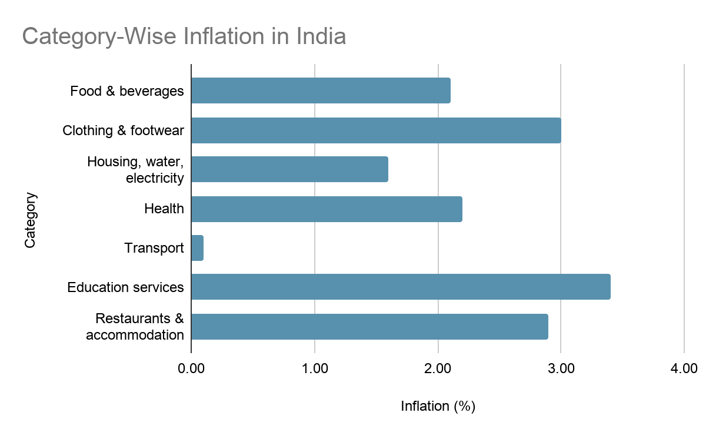
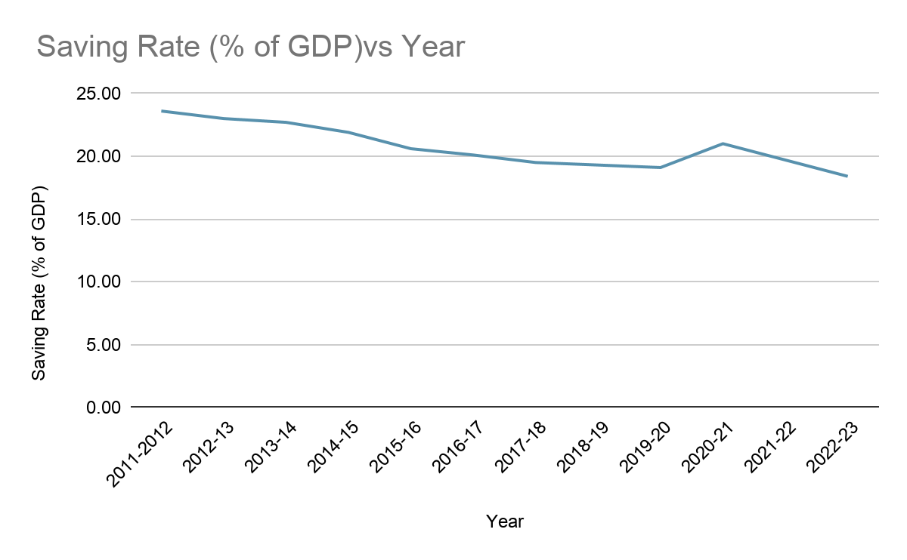

InquiryInflation Research
Project 03 · Research paper
Inflation and the Indian middle class
What rising prices do to households that are comfortable but not cushioned: the grocery bill, the EMI, the school fees, and the share of income left to save.
- Scope
- Urban households, ₹5–30 lakh a year, Tier 1 and 2 cities
- Period
- Mainly 2018–2024
- Sources
- World Bank, RBI, MoSPI, AMFI, NIBM
- Status
- Paper completed
The question
How does inflation affect the financial lives of middle-class households in India? Not the headline CPI number, but what it does to spending, saving, investing, and decisions such as eating out, buying a car or getting married.
Who counts as middle class
The paper focuses on the urban middle class, defined for this project as households earning ₹5 lakh to ₹30 lakh a year, mostly in Tier 1 and Tier 2 cities, living on salaries, professional work or small businesses, with regular commitments such as rent or home-loan EMIs, school fees and transport.
Within that band the paper looks at three things that change how inflation lands: occupation (fixed salary vs variable business income), loan commitments, and school-age children.
How the paper is built
- Concepts: CPI vs WPI, demand-pull vs cost-push, real vs nominal income, purchasing power.
- Spending changes: groceries, rent and EMIs, education.
- Saving and investing: the move from fixed deposits to SIPs, falling household savings, liquidating investments, precautionary saving.
- Lifestyle and psychological effects: eating out, delayed purchases, vehicle upgrades, marriage timing.
- An illustrative household budget, 2018 vs 2024.
- A simple model of real-income compression.


A household, 2018 vs 2024
An illustrative budget, not a real family: typical urban expenses adjusted for observed inflation trends.
| Category | 2018 | 2024 |
|---|---|---|
| Income | 60,000 | 85,000 |
| Rent | 15,000 | 24,000 |
| Food | 8,000 | 14,000 |
| School fees | 5,000 | 10,000 |
| Transport | 4,000 | 7,000 |
| Other essentials | 8,000 | 15,000 |
| Total expenses | 40,000 | 70,000 |
| Savings | 20,000 | 15,000 |
Real vs nominal income
Income rises from ₹60,000 to ₹85,000, about 42%. But consumer prices rose about 37.6% between 2018 and 2024 (World Bank annual CPI, 2019–2024). In 2018 prices:
₹85,000 ÷ 1.376 ≈ ₹61,800
A 42% raise becomes roughly a 3% real increase. The paper sketches the chain as: inflation ↑ → real income ↓ → savings capacity ↓ → discretionary spending ↓ → economic mobility ↓.
What the paper concludes
- Nominal incomes have risen, but rising living costs have reduced their real purchasing power.
- Food, housing and education take a larger share of income, leaving less for saving or discretionary spending.
- Fixed deposits often return less than inflation, and more households are turning to SIPs and market-linked investments.
- Households cut back on non-essentials: eating out less, delaying big purchases and vehicle upgrades.
- Persistent pressure on budgets adds to financial stress and uncertainty about the future.
These are the paper’s own conclusions, drawn from the national data and the illustrative budget above; the paper does not survey households directly.